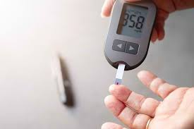
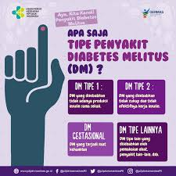
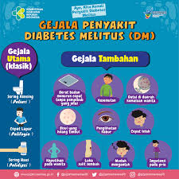
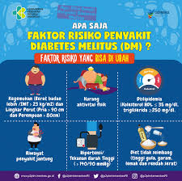

GEJALA DIABETES MELITUS
Apa itu Diabetes Melitus?
Diabetes melitus adalah kondisi yang terjadi akibat tingginya kadar gula darah karena tubuh tidak mampu memproduksi insulin yang cukup atau tidak dapat menggunakan insulin secara efektif. Insulin adalah hormon yang berfungsi mengubah glukosa menjadi energi. Jika kondisi ini dibiarkan, kadar gula darah yang tinggi (hiperglikemia) dapat memicu komplikasi serius. Oleh karena itu, penting untuk mengenali gejala diabetes sejak dini agar dapat mencegah dampak buruknya.
Jenis-Jenis Diabetes Melitus
Jenis diabetes melitus terbagi menjadi dua. *Diabetes tipe 1* terjadi karena kerusakan autoimun pada pankreas sehingga tubuh tidak dapat memproduksi insulin sama sekali atau hanya dalam jumlah kecil. Sementara itu, *diabetes tipe 2* disebabkan oleh resistensi insulin, di mana tubuh tidak merespons insulin dengan baik. Kondisi ini menyebabkan pankreas bekerja keras hingga akhirnya produksi insulin menurun, sehingga kadar gula darah tetap tinggi.
Gejala Diabetes Yang Perlu Diwaspadai
Gejala umum diabetes melitus sering kali tidak disadari. Beberapa tanda yang perlu diwaspadai adalah sering buang air kecil, rasa haus berlebihan, penurunan berat badan tanpa sebab yang jelas, kelelahan terus-menerus, serta luka yang sulit sembuh. Jika mengalami gejala ini, segera periksakan diri ke fasilitas kesehatan untuk mendapatkan diagnosis dan penanganan yang tepat.
Faktor Risiko Diabetes Melitus
Faktor risiko diabetes terbagi menjadi dua kelompok. *Faktor yang dapat diubah* meliputi obesitas, kurang aktivitas fisik, pola makan tidak sehat, hipertensi, kadar kolesterol tinggi, dan riwayat penyakit jantung. Sementara itu, *faktor yang tidak dapat diubah* mencakup usia di atas 40 tahun, riwayat keluarga dengan diabetes, diabetes saat kehamilan, serta berat lahir bayi yang ekstrem, yaitu kurang dari 2 kg atau lebih dari 4 kg.
Dampak dan Pencegahan Diabetes Melitus
Diabetes yang tidak dikelola dengan baik dapat menimbulkan komplikasi serius, seperti penyakit jantung, kerusakan saraf (neuropati), gangguan penglihatan, dan kerusakan ginjal. Oleh sebab itu, mengenali gejala dan faktor risiko diabetes sangat penting. Untuk mencegah atau mengelola kondisi ini, adopsi gaya hidup sehat dengan pola makan seimbang, rutin berolahraga, dan menghindari kebiasaan buruk seperti merokok dan konsumsi alkohol berlebih. Dengan tindakan sedini mungkin, komplikasi serius dapat dihindari.